Admin 控制台使用指南
Admin 控制台使用指南
本指南逐步指导办公室文员／仓库主管使用 Admin 控制台处理日常单据与仓库主数据，章节按实际工作流程顺序编排。每章结构统一：用途 → 开始之前 → 逐步操作（附截图）→ 常见问题。章节名称与左侧导航菜单的实际名称一致。
Part 1 — 日常运营（按单据流程顺序）
| 章 | 内容（= 菜单名称） | 说明 |
|---|
| 1 | 收货单 | 列表筛选、详情页单项/批次修改（Date Code／Lot／COO／COW／箱号）、确认收货、重新分配、下载出货单 |
| 2 | 客户收货上传 | 上传客户收货 Excel／PDF → 本地核对 → 建立 CN 收货单（PDA「手動收貨／收貨掃描」的单据来源） |
| 3 | 拣货单 | 列表筛选、修改交货日期/date code、下载拣货清单、重新分配（单单重分配，不影响其他单） |
| 4 | 新增 VMI | Excel 批量建立 VMI 拣货单：本地核对、问题清单、一次性建立 |
| 5 | 取消发票 | 跟进上游取消：登记替代发票、点击「確認退回上架」放行 PDA 退回任务 |
| 6 | 问题与警示 | 收货问题、拣货问题、过期日期码警告、问题回报（bug 收件箱） |
Part 2 — 主数据设定
| 章 | 内容 | 说明 |
|---|
| 7 | 仓库设定 | 货架（QR 打印、Excel 导入导出）、货架箱（批量建立）、子库（共享组）、箱型、国家 |
| 8 | 库存查询 | 多条件搜寻库存、批次历史异动；附「臨時上架」与「內部調撥單」两个只读查询页 |
建议阅读顺序
新同事按流程顺序阅读：2 → 1 → 3 → 6；第 4、5 章按需查阅；第 7、8 章属设定与查询，需要时再阅读。
相关文档
- PDA 使用指南（CN 流程）：
../pda/
- Admin 功能总表（技术向）：
../../apps/admin/TOC.md
第 1 章 收货单（Receiving Orders）
用途
「收貨單」页面用于查看及管理所有供应商收货批次（batch）：查看每张收货单的状态和进度、修改单上项目的 Date Code / Lot Code / COO / COW / 箱号、在货到齐后执行「確認收貨」、重新执行库存分配，以及下载出货单（shipper）Excel。一般由办公室文员或仓务主管使用，日常配合 PDA 的收货扫描流程：PDA 同事扫货后，文员在这里核对并确认。
开始之前
- 你需要一个属于 admin 群组 的账号，才能登录 admin 控制台。
- 收货单由上游系统同步进来，无需手工开单；没有发票的空单不会在列表显示。
- 「確認收貨」和「重新分配」会即时影响拣货单的库存分配，操作前请确认 PDA 同事已扫完货或已点好实数。
- 收货单状态分四种：「待處理」（pending）、「暫收貨」（provisional_received）、「已收貨」（in_hand）、「已完成」（clear）。
逐步操作
第 1 步：进入收货单列表
- 登录 admin 控制台。
- 在左边导航菜单，点击 「收貨」 下的 「收貨單」。
- 画面显示收货单列表，默认只显示「待處理」和「已收貨」状态的单。
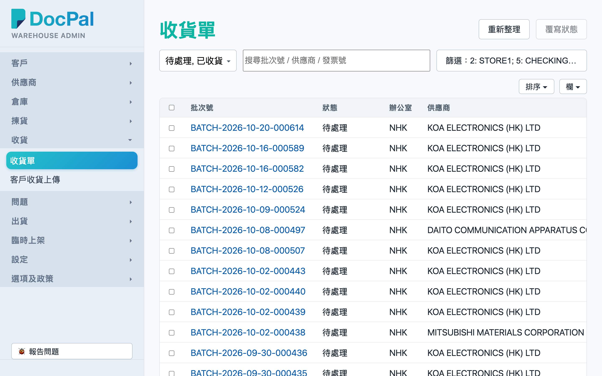
收货单列表页（默认状态筛选、搜索栏、表格）
第 2 步：筛选、搜索和排序
- 状态筛选：在列表上方的状态下拉框（显示「全部狀態」）选择一个或多个状态；不选任何状态即为显示全部。
- 搜索：在「搜尋批次號 / 供應商 / 發票號」栏输入关键字，系统会自动搜索（停手约 0.3 秒后生效）。
- 排序：点击栏位标题（例如「批次號」、「交貨日期」、「建立日期」）即可排序，再点一次反转次序。
- 列表下方的分页器可以翻页和改每页数量；筛选条件会记在网址里，从详情页点返回不会丢失。
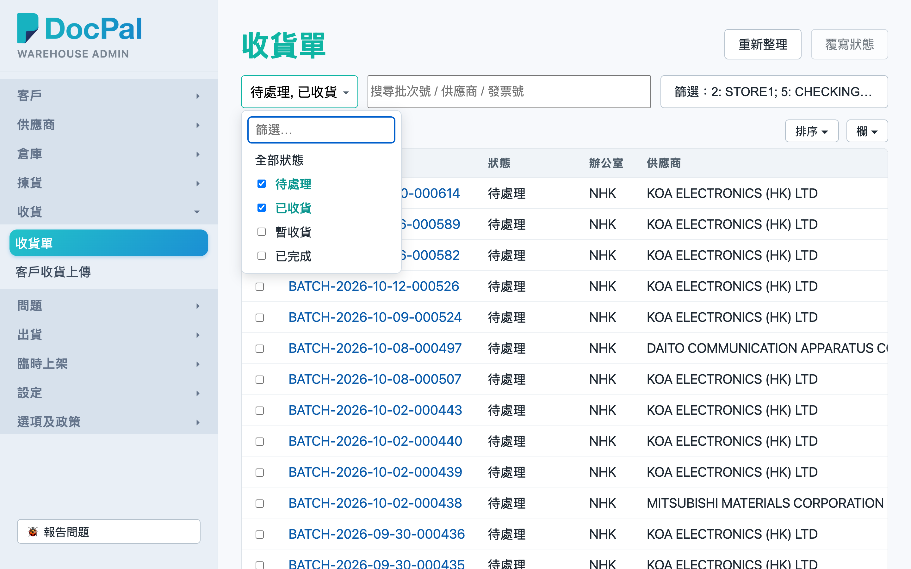
状态下拉框展开，四个状态可勾选
第 3 步：打开收货单详情
- 在列表点击蓝色的批次号，或者双击该行，进入「收貨單 {批次號}」详情页。
- 页面上方显示：状态、供应商、交货日期（可以直接修改，改完点击旁边的 「儲存」）、单据 Date Code。
- 下方按发票分组列出所有项目，每行显示零件编号、PO / 行、应收、已收、已上架、已分配、箱号、图号、Date Code。
- 想集中查看某些项目：在「按發票號 / 零件編號 / PO / 箱號篩選…」栏输入关键字；或者用「分組方式」下拉改成按 「箱號」 或 「料號」 分组。
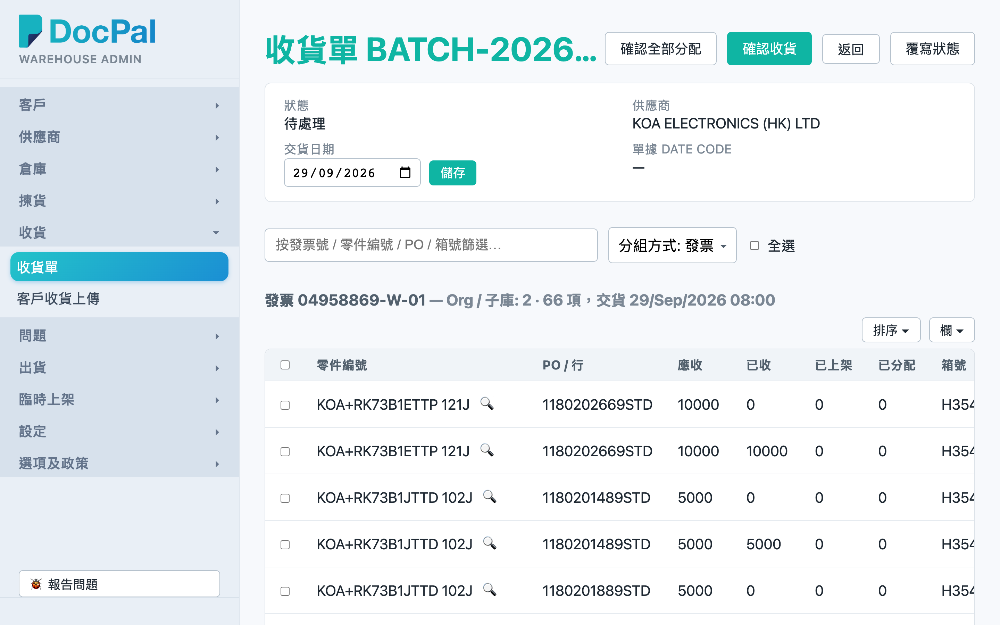
详情页上半部：订单资料、可修改的交货日期、发票项目表
第 4 步：修改单个项目（Date Code / Lot Code / COO / COW / 箱号）
- 在项目行最右点击 「編輯詳情」。
- 弹出「編輯項目 — {料號}」窗口，里面有：Date Code（可用「今日」／「下週」按钮快速填入）、Lot Code、COO、COW、箱号。
- 填好后点击 「儲存」；留空的栏位会被清走原有数值。
- 画面自动刷新，表格显示新数值。
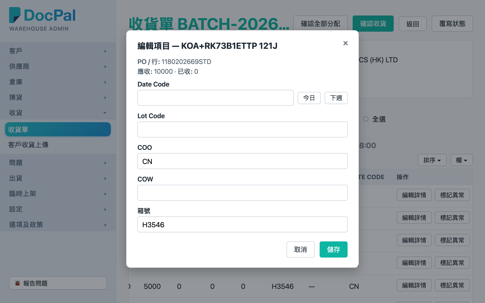
「編輯項目」弹窗（Date Code 连今日／下周按钮、Lot Code、COO、COW、箱号）
第 5 步：批量修改多个项目
- 在每行左边的勾选框选多个项目；要一次选完当前显示的全部项目，勾选 「全選」。
- 勾选后会出现一条蓝色工具栏，显示「已選 N 項」，点击 「批次編輯」。
- 在「批次編輯 — N 個項目」窗口填入要改的栏位；留空的栏位会保留各项目原本的值（与单项编辑不同）。
- 点击 「儲存」。如有个别项目失败，页面上方会显示哪个料号出错。
第 6 步：确认收货（Confirm Arrival）
- 当订单状态是「待處理」或「暫收貨」，详情页右上方会看到蓝色 「確認收貨」 按钮。
- 点击后，系统弹出确认：「確認訂單 {批次號} 已到貨？此操作會將訂單標記為已收貨，並將每行實收數量設為應收數量。」
- 确定后订单变成「已收貨」，系统同时即时重新计算这张单相关的库存分配；页面会显示绿色横幅「庫存分配已完成 — 數據已刷新」。如果计算需要较长时间，会看到黄色「後台正在計算庫存分配…」，等它完成即可。
第 7 步：重新分配（Re-allocate）
- 订单状态是「已收貨」时，右上角有 「重新分配」 按钮。
- 点击并确认「重新分配收貨單 {批次號} 的貨品？」。
- 系统会按这张收货单涉及的料号，重新计算所有相关开放中拣货单的分配（手工钉住的分配不会动）；完成后看到绿色提示，项目的「已分配」栏会更新。
- 注意：订单未确认收货就点这个按钮会报错「訂單確認收貨後才能重新分配」；如果有 PDA 同事正在拣相关的拣货单，会出现「使用中」错误，要等他们完成后再试。
详情页右上角按钮栏（下载出货单／重新分配／确认收货／覆写状态）
第 8 步：下载出货单（Shipper）
- 订单状态是「已收貨」时，点击 「下載出貨單」 — Excel 里面是当前的分配数量（即哪张拣货单会从这批货拿多少）。
- 订单状态是「已完成」时，按钮会变成 「下載已完成出貨單」 — 里面是实际已拣数量。
- 点击后浏览器会自动下载
.xlsx 文件，文件名带批次号。
- 注：页面上没有「下載送貨單列表（DOL）」按钮 — 这个功能暂时未开放。
第 9 步：覆写状态（进阶，慎用）
- 在详情页点击 「覆寫狀態」，或者在列表勾选多张单后点击右上角 「設定狀態（N）」。
- 在弹窗选择「新狀態」，可填「原因（選填）」，点击 「儲存」。
- 如果将「已完成」的单改回其他状态，画面会警告：该单的库存会重新进入分配供应；将已收货的单退回「待處理」，已收数量会保留。请确定确实需要才这样做。
常见问题
Q：为什么找不到某张收货单？
A：列表默认只显示「待處理」和「已收貨」的单。试试在状态筛选加入「暫收貨」／「已完成」，或者不选任何状态显示全部。另外没有发票的空单系统不会显示。
Q：为什么看不到「確認收貨」按钮？
A：这个按钮只会在订单状态是「待處理」或「暫收貨」时出现。如果已经是「已收貨」就无需再点。
Q：点「重新分配」弹出「訂單確認收貨後才能重新分配」？
A：先做第 6 步「確認收貨」，订单进入「已收貨」状态后才可以重新分配。
Q：点「重新分配」提示订单「使用中」？
A：代表有 PDA 同事正在相关拣货单拣货，系统锁定了。等他完成（或取消）之后再点一次。
Q：批量编辑时我只改了 Date Code，其他栏会不会被清走？
A：不会。批量编辑留空的栏位会保留原值；但单项编辑留空的栏位会被清走，注意区分。
Q：点「下載出貨單」失败怎么办？
A：页面上方会显示「出貨單下載失敗」和原因。先点击 「重新整理」 再试；持续失败请联系系统管理员。
第 2 章 客户收货上传（CN Receiving Upload）
用途
「客戶收貨上傳」页用于将客户（CN 仓）的「收貨確認及付款通知書」导入系统，建立 CN 收货单，之后才能由仓库同事用 PDA 扫描实货、再上架。有两种上传方式：
- Excel（.xls / .xlsx）：浏览器本地解码，你可以在画面上核对并修改资料后再送出；资料无问题会立即建立收货单。
- PDF（已扫描的确认书）：送到 DocPal workflow 做 OCR 解读，需要等待一段时间才会变成收货单。
一般日常由办公室文员负责上传与核对，仓库主管负责确认收货与跟进异常。
开始之前
- 你的账号必须属于 admin 群组，才能用 admin 控制台登录。
- 准备好客户提供的收货确认 Excel 档（或已扫描的 PDF）。一次上传中 PDF 与 Excel 不能混合；多份 PDF 会合并为同一个上传，多份 Excel 则每份各建一张收货单。
- Excel 上传会对照零件主档：明细中的「型號」要在零件主档中找到，才能自动建立；找不到就要在核对画面修正。
- 整个流程的衔接：上传建立收货单 →（如是「待處理」状态）admin 在详情页点击「確認收貨」→ PDA 同事扫描实货 → 扫完后才会出现上架任务 → PDA 完成上架。本章涵盖上传至确认收货这一段。
逐步操作
第 1 步：进入「客戶收貨上傳」列表
- 用 admin 账号登录 admin 控制台。
- 在左边导航 menu 点击 「客戶收貨上傳」。
- 画面显示 CN 收货单列表，栏位包括：批次号、编号（通知书编号）、供应商、交货日期、状态、上架状态、建立日期。
- 顶部有搜索栏（提示字：「搜尋批次號 / 編號 / 供應商」）可以直接筛选；右上角有「重新整理」与「新增上傳」两个按钮。
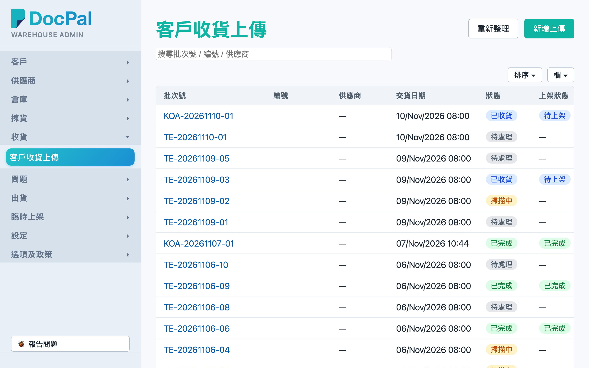
「客戶收貨上傳」列表页，有几张收货单和顶部搜索栏、新增上传按钮
第 2 步：开始新增上传
- 点击右上角 「新增上傳」，进入「新增客戶收貨上傳」页（步骤一「選擇檔案」）。
- 点击 「選擇 PDF / Excel 檔案（可多選）」 选择文件，或者直接把文件拖放到虚线框（「…或將 PDF / Excel 檔案拖放到此處」）。
- 注意事项：
- 只接受 .pdf / .xls / .xlsx，其他格式会显示「只接受 .pdf / .xls / .xlsx 檔案。」
- PDF 与 Excel 混合会显示「PDF 與 Excel 檔案不能同批上傳。」
- 选择了 PDF 的话，文件名会列在下面，可以点击「×」删除个别文件；确认后点击 「確認」 送出，DocPal workflow 就会开始 OCR 处理。
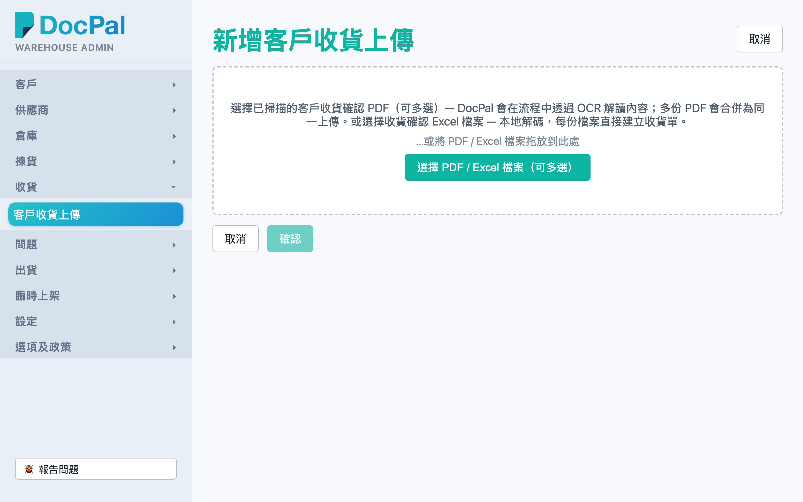
「新增客戶收貨上傳」步骤一，拖放区与「選擇 PDF / Excel 檔案」按钮
第 3 步：核对／修改 Excel 解码结果（步骤二「核對資料」）
选择了 Excel 之后，系统会即时在浏览器解码：
- 资料全部正常：系统会自动送出并建立收货单，直接跳转到新收货单的详情页（多份 Excel 则跳转到第一份的详情页），无需再做操作。
- 发现问题：画面会进入步骤二「核對資料」，顶部红色错误列会逐项列出问题，例如「缺少編號。」「缺少型號。」「數量必須為正整數。」「型號「XXX」不在零件主檔 — 請修正後再送出。」
- 每份 Excel 显示为一个区块，上面可以修改表头栏位：品牌（編號）（留空会自动取首笔明细的品牌）、收货办事处、供应商、编号、发票号码、收货日期。
- 下面明细表每一格都可以直接修改：订单号、箱号、箱数、型号、摘要(D/C)、数量(PCS)、重量（KG)、办事处、发货项、备注。点击「新增明細」可以加行，点击「刪除」可以删行或整个文件区块。
- 表格底部有合计对照：Σ 箱数 / Σ 数量(PCS) 与 Excel 原本的合计行。如果不一致会出现「合計不符」提示——这只是警告，你仍然可以送出，但建议核对清楚。
- 改好之后点击 「確認」 送出；想返回重新选择文件就点击「返回」。
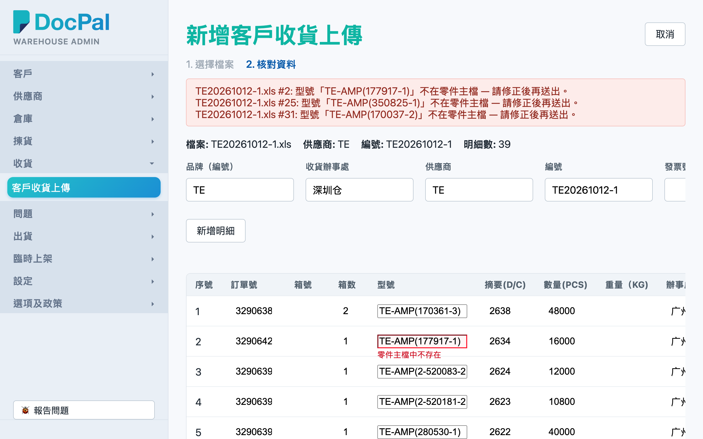
步骤二「核對資料」，红色错误提示列 + 可编辑明细表 + 底部合计对照
第 4 步：追踪上传与 DocPal workflow 状态
- 返回「客戶收貨上傳」列表。
- PDF 上传未处理完的，会以灰色文字显示在列表最顶部，状态栏显示「處理中」，批次号无法点击进入；页面会显示提示「以下編號的 DocPal 流程仍在處理中，完成並同步後會自動轉為收貨單。」
- 列表每 10 秒会自动刷新，处理完成后该行会自动变回正常收货单（可以点击进入）。画面顶部有更新提示条时，点击「重新整理」即时更新。
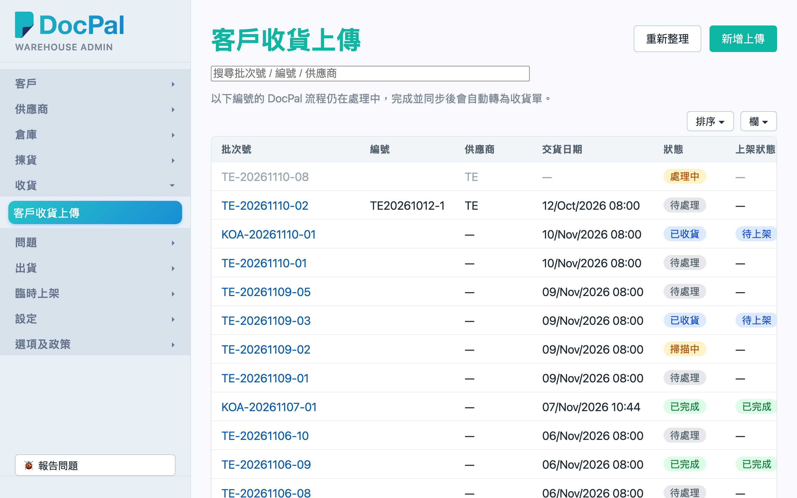
列表顶部灰色「處理中」行与 pendingHint 提示文字
第 5 步：查看收货单详情、确认收货
- 在列表点击蓝色的 批次号，进入「客戶收貨單 {批次号}」详情页。
- 顶部卡片显示：状态（待处理／扫描中／已收货／已完成）、上架任务状态（待上架／已完成）、交货日期、收货时间、收货人、日期代码、办公室、建立日期，以及「指派人」下拉（选择了某用户之后，PDA 只有该用户能看到这张单）。
- 下面按发票分组显示明细，栏位包括型号、WCL 编号、PO 号码、订单数量、实收数量、扫描（正常／数量不符／异常／未扫描）、上架进度（已上架/实收数量与货架位置）、箱号、日期代码、批号、COO、COW、子库、建议货架等。
- 如果订单还是「待處理」：
- 可以直接在表格中修改各栏（改完即存），或用每行右边的「編輯」按钮／勾选多行后用「批量編輯」；
- 核对无误后点击右上角 「確認收貨」，确认对话框会提示「訂單會進入掃描狀態 — 需由 PDA 掃描實物後才會上架」。确认后订单变为「掃描中」，等待 PDA 同事扫描实货。
- 需要文件可以点击 「下載 Excel」（重新生成的收货确认书，有上架任务时会附上 QR code 方便 PDA 直接扫入上架）或 「列印」（PNG 版）。
- 页面底部有操作记录（Audit Log），记录每一次修改。
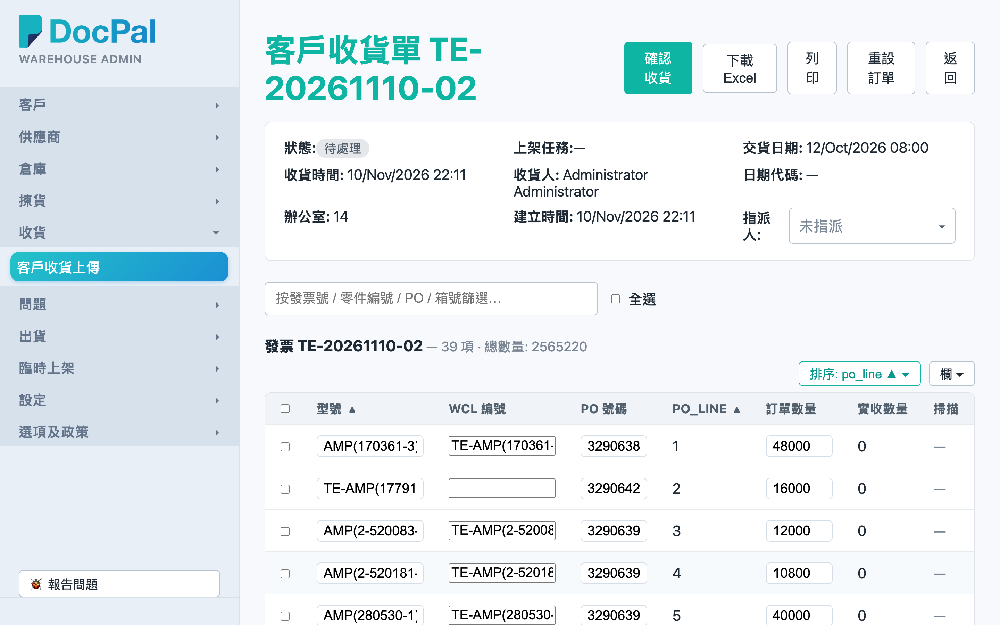
收货单详情页：状态卡（含指派人下拉）、发票分组明细表、「確認收貨／下載 Excel／列印／重設訂單」按钮
常见问题
Q：上传了 PDF，但列表一直看不到收货单？
A：DocPal OCR workflow 需要时间处理。列表最顶部会有灰色「處理中」行，每 10 秒自动刷新；完成后会自动变成正式收货单。等了很久仍未完成，先点击「重新整理」，再不行就向系统管理员查询 workflow 状态。
Q：点击进入详情看到「收貨單尚未同步」？
A：代表 DocPal 流程还未处理完或者上游还未同步资料。稍后返回列表重新整理即可，无需重复上传。
Q：Excel 上传时出现「型號「XXX」不在零件主檔」？
A：先检查型号有没有打错；如果是新型号，要请相关同事先在零件主档建立，之后回到核对画面修正再点击「確認」。
Q：PDF 与 Excel 一起选择了，为什么出错？
A：两种文件不能同批上传（会显示「PDF 與 Excel 檔案不能同批上傳」）。分开两次上传。
Q：确认了收货之后发现资料错误，怎么办？
A：详情页右上角有「重設訂單」按钮（状态未是「已完成」才能看到）。重设会清除所有扫描／收货／上架进度，订单返回「待處理」，你修正资料后再「確認收貨」。已完成的订单因为库存已入账，不能重设。
Q：「合計不符」警告是不是一定要处理？
A：不是阻挡性错误，仍然可以送出。但它代表明细加总与 Excel 印出的合计行不一致，通常是解码或原始文件有出入，建议逐行核对箱数与数量(PCS)再送出。
第 3 章 拣货单（Picking Orders）
用途
「揀貨單」页用于查阅和跟进所有拣货单：按状态／类型／交货日期筛选、用单号或客户搜索、进入详情页修改交货日期和收货地、调整分配的日期代码（date code）、下载拣货清单（packing list／TN 拣货用的清单 Excel）或打印，以及在需要时点击「重新分配」（Re-allocate）让系统为该张单重新计算货源分配。日常由办公室文员和仓库主管使用；PDA 仓员拣货的进度会即时反映在这里。
开始之前
- 你需要有 admin 群组的账号，先用桌面浏览器登录到 admin 控制台。
- 拣货单由上游系统同步下来（VMI 单除外，由「新增 VMI」上传建立），无需人工逐张开单。
- PDA 流程衔接：本页修改了交货日期或执行了重新分配之后，PDA 拣货列表会自动看到最新状态；如果仓员正在拣该张单（列表「鎖定人」栏有人名），重新分配会被拦截，要等他们完成或释放。
- 如需调整多张单的处理先后次序，请使用列表页右上角的「調整優先級」（本章不覆盖）。
逐步操作
第 1 步：进入「揀貨單」列表
- 登录后，在左侧导航菜单点击「揀貨單」。
- 页面顶部是标题「揀貨單」，右上角有「刷新」、「覆寫狀態」、「調整優先級」、「新增 VMI」几个按钮；下方是筛选栏和订单列表。
 拣货单列表整体版面（标题、按钮行、筛选栏、订单列表）
拣货单列表整体版面（标题、按钮行、筛选栏、订单列表）
第 2 步：筛选和搜索订单
- 「狀態」下拉（可输入文字搜索、可多选）：默认勾选「待處理」和「已分配」，即只显示尚未开工的单。想查看拣货中或已出货的单，加选「揀貨中」、「揀貨完成」、「已出貨」等；全部不勾选即等于显示全部状态。
- 「類型」下拉：选择 invoice、tn 或 vmi；全部不勾选 = 所有类型。
- 「交貨日期由」和「交貨日期至」：选择日期范围，只显示交货日期落在范围内的单。
- 最右侧的搜索框（提示文字「搜尋單號 / 客戶 / PO / 收貨地」）：输入后等待约半秒自动搜索；按 Enter 立即搜索——如果结果恰好只有一张单，系统会直接跳转到该张单的详情页，无需再点击。
- 列表每一行显示：单号、状态、类型、客户、PO 号、收货地、交货日期、明细数、已拣/总数、分配状态（已分配／部分分配／未分配，附数量）、锁定人、指派人、备注等。点击列标题可以排序，页底可以翻页和修改每页行数。
- 如需进入详情页：点击蓝色单号，或者双击该行。
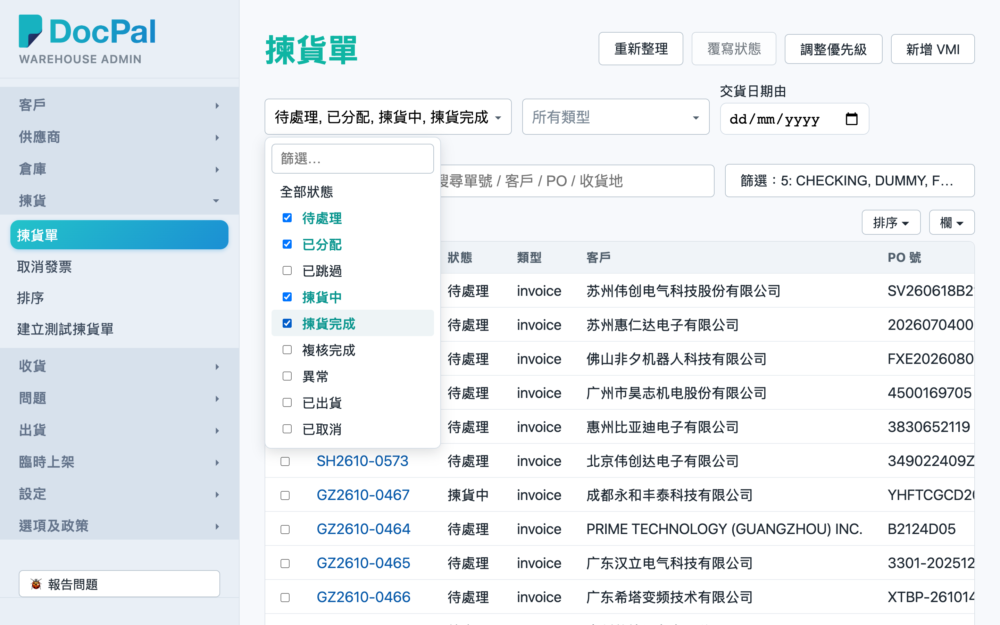
「狀態」筛选下拉展开，勾选多个状态
第 3 步：修改交货日期／收货地／Org／子库
- 在详情页上半部的资料区，找到「交貨日期」栏，点击日期框选择新日期。
- 同一区域还可以修改「收貨地」（国家/地区下拉）和「Org / 子庫」——注意 Org 和子库要两个一起选择或一起清空，只选一个会出现红字「請同時選擇 Org 和子庫（或兩者都清空）」，无法保存。
- 修改完成后，点击资料区右下角的「儲存」按钮。成功会看到「已儲存。」提示；之后列表和 PDA 都会看到新日期。
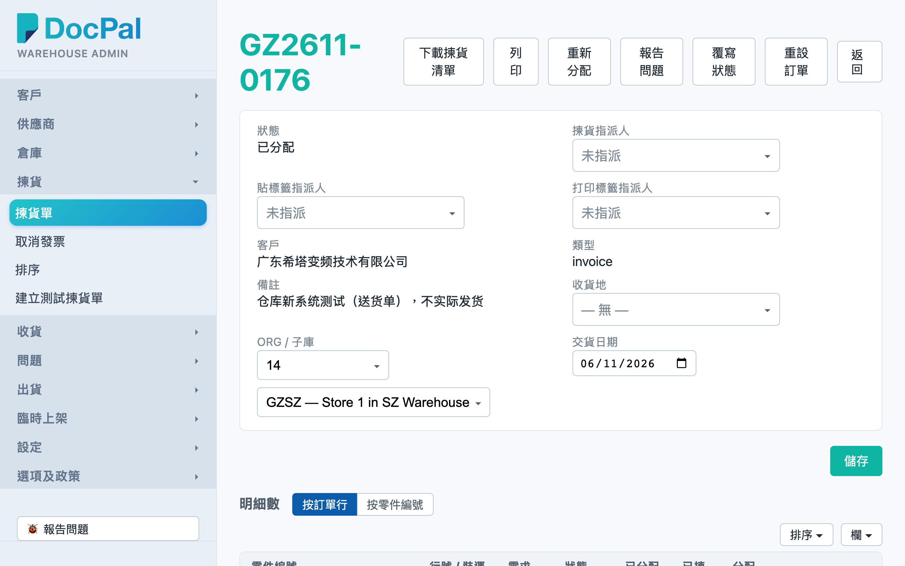
详情页资料区，交货日期栏和右下角「儲存」按钮
第 4 步：调整分配的日期代码（date code）
拣货单每行料件的「分配」栏会显示系统选择了哪个货架批次（格式类似「批次 A01-01 / BOX-1-2625」，尾段是日期代码）。如需改用其他日期代码的货：
- 在「明細數」表格该行，点击料号旁边的「🔍」（可用量）按钮。
- 弹出「零件可用量」窗口，列出该种料的所有库存批次和未完成收货来源。上方有「日期代碼由／至」筛选，可以只查看某段 date code 的批次。
- 在需要的批次输入数量，点击「分配」。这种人工分配会被记住（manual pin），之后执行「重新分配」也不会被冲掉。
- 如需移除某项现有分配：返回详情页「明細數」表，在「按訂單行」模式下点击该项分配右侧的「x」（移除分配），确认后系统会在后台重新计算。
- 如需一眼看清该种料共有多少行需求，可以点击表格标题旁边的「按零件編號」切换成合并显示，再点击 🔍 一次性完成所有分配。
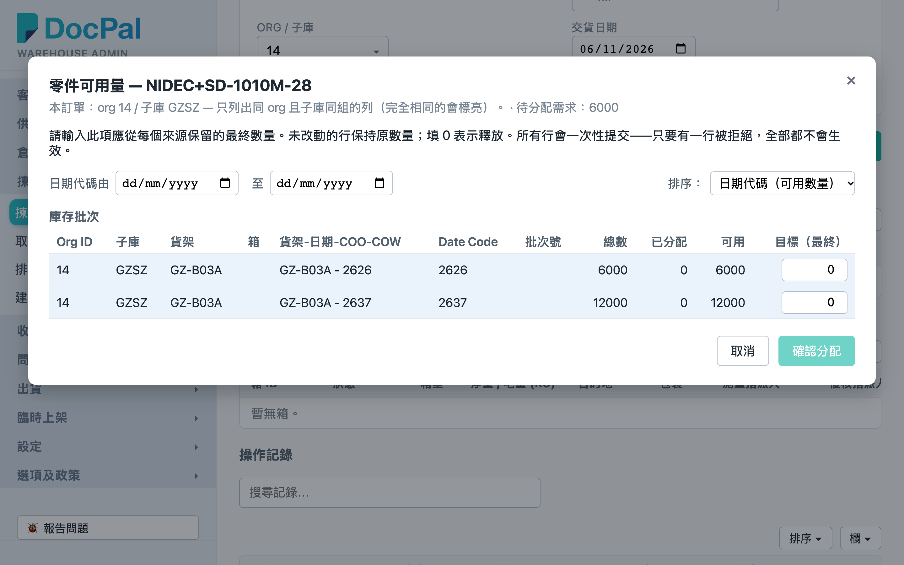
「零件可用量」窗口，显示库存批次列表和「日期代碼由／至」筛选
第 5 步：下载拣货清单／打印（packing list／TN 用）
- 在详情页顶部点击「下載揀貨清單」：浏览器会下载一个
picking-list-<單號>.xlsx Excel 文件，内容反映下载当时的分配，可以直接交给仓员或附入 packing list／TN 文件流程。
- 如需图像版：点击旁边的「列印」按钮，会弹出打印窗口，预览后打印或保存 PNG。
- 两者都是只读操作，不会改动订单任何资料，可以随时重复下载。
详情页顶部按钮行，圈出「下載揀貨清單」和「列印」
第 6 步：重新分配（Re-allocate）
何时需要点击：系统不会自动重算分配，所以当你知道货源有变——例如刚收了新货入库、某批货被挪走了、或者想改用其他 date code——就要人工点击一次。
- 打开该张单的详情页（状态要是「待處理」、「已分配」或「揀貨中」才能看到这个按钮）。
- 点击顶部「重新分配」按钮，弹出确认「重新分配訂單 XXXXX？」，点击确定。
- 等待几秒，完成后顶部会出现绿色横幅「分配完成（xxx ms）— 資料已更新。」，明细的分配栏已换成新结果。
- 请放心：重新分配只影响这一张单——其他正在使用同一料号的拣货单不会被改动；你之前用 🔍 做过的人工分配（manual pin）会保留。
如果点击后看到红字「訂單 XXXXX 正由某某操作中 — 請稍後再試」，即表示有仓员在 PDA 拣这张单，等他完成或联系他释放之后再点击。
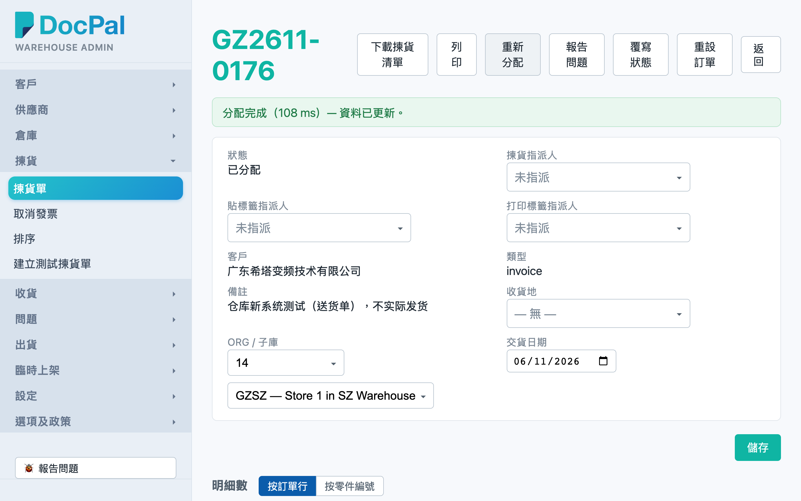
点击「重新分配」后显示绿色「分配完成」横幅
常见问题
Q：为什么找不到某张拣货单？
A：最常见原因是状态筛选——默认只显示「待處理」和「已分配」。在「狀態」下拉加选其他状态（或全部不勾选），再试搜索。也可以检查「交貨日期由／至」是否设了范围把它排除了。
Q：为什么没有「重新分配」按钮？
A：这个按钮只在状态为「待處理」、「已分配」或「揀貨中」时才出现；已拣货完成、已出货或已取消的单不能重算分配。
Q：点击「重新分配」会不会搞乱其他单？
A：不会。它只会清除再重建这张单的分配，其他拣货单原封不动；其他人工分配（用 🔍 下的 pin）也会保留。
Q：点击后弹出「正由某某操作中」怎么办？
A：即表示有仓员在 PDA 拣这张单（列表「鎖定人」栏会看到他的名字）。等他拣完、或叫他退出该单之后再点击；不要急着重试。
Q：改了交货日期点击「儲存」，但出现红字说要同时选择 Org 和子库？
A：「Org / 子庫」是一对——要么两个都选，要么两个都清空。补上另一个之后再点击「儲存」即可。
Q：下载了拣货清单之后再改分配，Excel 会自动更新吗？
A：不会，该 Excel 是下载那一刻的快照。改完分配记得重新点击「下載揀貨清單」获取最新版本。
第 4 章 新增 VMI（VMI Excel Upload）
用途
「新增 VMI 揀貨單」页面用于将客户提供的 VMI Excel 文件（VMI_Template_*.xlsx）批量导入系统：文件内每一个 VMI Ref.No 会生成一张拣货单，同一 Ref.No 的每一行即为该单的料项。系统会在你的浏览器本地读取并核对 Excel 内容，确认无问题后一次性创建全部拣货单。创建完成后，这些 VMI 拣货单会出现在「揀貨單」列表中，之后按正常拣货流程（分配库存 → PDA 拣货）处理。此操作一般由办公室文员或仓库主管执行。
开始之前
- 你已有 admin 群组账号，并已通过浏览器登录 Admin 控制台。
- 已收到客户的 VMI Excel 文件（
.xlsx 或 .xls），文件内需有一个工作表，表头必须包含以下四列（列次序可任意）：VMI Ref.No、Item、Qty、Sub Inventory；其余列（Customer Code、Customer Name、Ship To Address、Customer PO、PO Line、Customer Item）如有会一并导入，没有也不妨碍上传。
- Excel 内的 Item 必须是零件主档中已有的型号；Sub Inventory 必须是本仓库已设定的子库代码，否则会被拦截，创建按钮无法点击。
- 创建出来的拣货单类型会标记为
vmi，初始状态为「待處理」，必须先完成库存分配（Re-allocate），PDA 同事才能看到并进行拣货。
逐步操作
第 1 步：进入拣货单列表
- 在左侧导航菜单中，点击「拣貨」分组下的「揀貨單」。
- 画面显示拣货单列表，右上方有一排按钮：「重新整理」、「更改狀態」、「調整優先級」、「新增 VMI」。
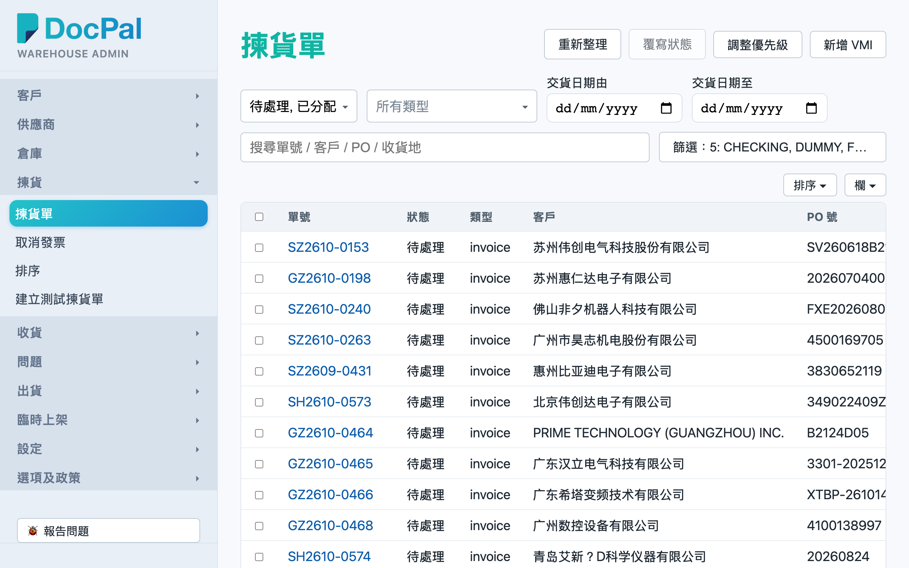
拣货单列表页，标出右上方「新增 VMI」按钮
第 2 步：打开新增 VMI 页面
- 点击「新增 VMI」按钮。
- 进入「新增 VMI 揀貨單」页面，页面顶部有说明文字：「上傳 VMI_Template_*.xlsx — 每個 VMI Ref.No 產生一張揀貨單，同 ref 的行作為其料項。」
第 3 步：选择 Excel 文件
- 点击「選擇 Excel 檔案」按钮，在弹出的文件选择窗口中选择客户的 VMI Excel 文件。
- 点击后按钮会短暂显示「解析中…」，文件名会显示在按钮右侧。
- 文件是在你的浏览器内本地读取，创建之前不会写入系统；选错文件可再次点击「選擇 Excel 檔案」重新选择。
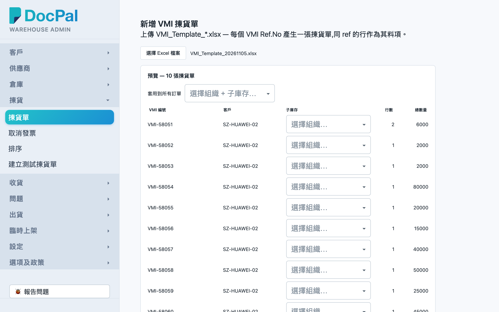
新增 VMI 拣货单页，选择文件后按钮旁显示文件名
第 4 步：逐行核对预览并修正问题
- 解析成功后，画面会出现「預覽 — N 張揀貨單」区块，每一行代表一个 VMI Ref.No，显示：「VMI 編號」、「客戶」、「子庫存」、「行數」、「總數量」。
- 逐行核对 VMI 编号、客户、行数与总数量是否与客户文件一致。
- 查看「子庫存」一列：
- 如果该子库代码只对应一个组织，系统会自动填好。
- 如果对应多个组织，列内会出现「選擇組織…」下拉框，需要手动选择一个（显示格式为「組織編號 · 子庫存代碼」）。
- 如果文件有问题，页面上方会出现红色提示「建立前請先修正以下問題:」，逐条列明问题，例如：
- 「有列缺少 VMI Ref.No。」
- 「單 X：數量『Y』必須為正整數。」
- 「型號『Z』不在零件主檔。」
- 「子庫存『S』（單 X）未在本倉庫設定。」
- 有问题时无需在网页上修改——回到 Excel 文件修改，保存后再点击「選擇 Excel 檔案」重新上传，直至红色提示消失为止。
- 有多张订单且全部属于同一组织＋子库存时，可以使用「套用到所有訂單」下拉框一次性设定全部，无需逐张选择。
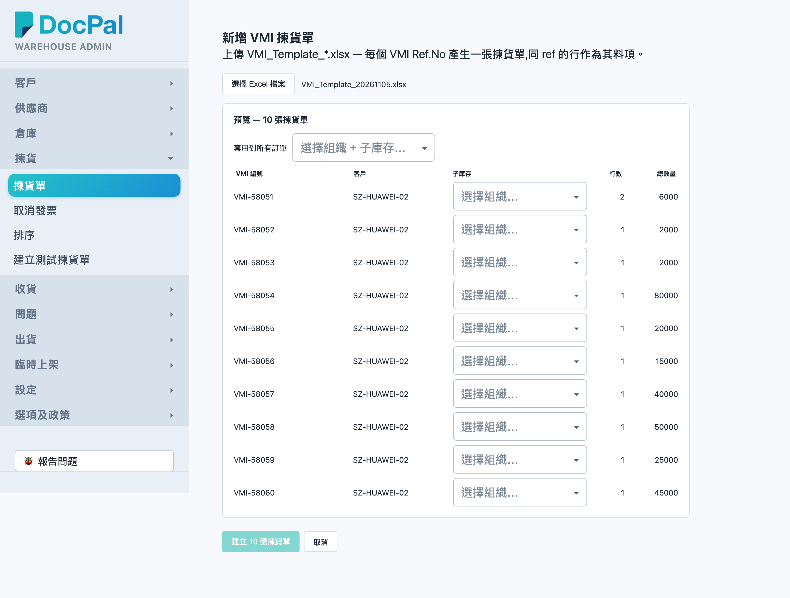
预览区块显示多张 VMI 拣货单（VMI 编号／客户／子库存／行数／总数量）及「套用到所有訂單」下拉框
第 5 步：创建拣货单
- 确认预览无问题、每张单的子库存都已选好后，点击底部的「建立 N 張揀貨單」按钮（N 为实际单数）。如果按钮为灰色，表示还有问题未修正或有订单未选择组织。
- 按钮会显示「建立中…」，完成后自动跳回「揀貨單」列表。
- 如果不想创建，随时可以点击「取消」返回列表，不会留下任何数据。
第 6 步：确认创建结果
- 在「揀貨單」列表中，用「類型」筛选列选择
vmi，或在搜索栏输入 VMI Ref.No 找到刚创建的单。
- 点击单号进入详情页，核对料项、数量、客户与收货地。
- 之后按正常流程进行库存分配，PDA 同事才能开始拣货。
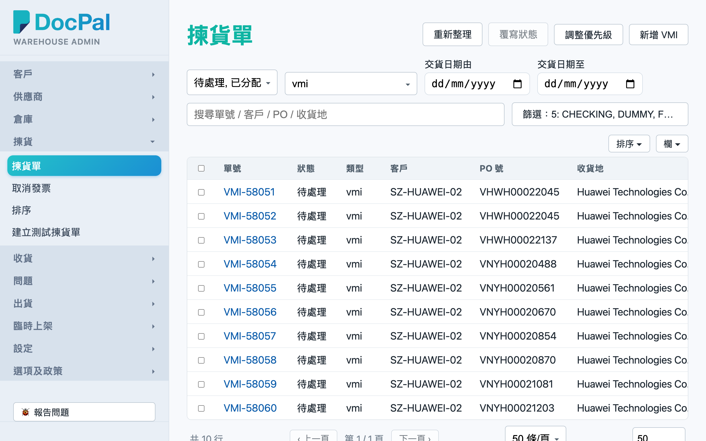
拣货单列表用类型筛选 `vmi`，看到刚创建的拣货单
常见问题
Q：上传后出现「找不到 VMI 表頭 — 工作表需要 VMI Ref.No / Item / Qty / Sub Inventory 欄。」怎么办？
A：文件内没有一个工作表同时具备这四个列名。打开 Excel 检查列名写法（大小写不分，但名称要正确，例如「VMI Ref.No」），改好后重新上传。如果文件有封面页不要紧，系统会自动查找下一个工作表。
Q：「建立 N 張揀貨單」按钮为灰色无法点击？
A：三个可能：(1) 页面上方还有红色问题清单未清除；(2) 有订单的「子庫存」列仍是「選擇組織…」未选择；(3) 仍在解析或创建过程中。逐项检查即可。
Q：出现「型號『X』不在零件主檔。」如何处理？
A：即 Excel 内的 Item 型号在系统零件主档中不存在。先与相关同事确认是客户写错型号还是主档尚未建立此料；改好 Excel 或建好主档后重新上传整个文件。
Q：出现「零件主檔檢查失敗 — 請重試。」是不是文件有问题？
A：不是，这是系统检查零件时网络或服务器出错。稍等片刻再点击「選擇 Excel 檔案」重新上传一次；若持续失败请联系系统管理员。
Q：上传后才发现内容有错，已经创建了怎么补救？
A：创建前点击「取消」是最安全的做法。如果已经创建，回到「揀貨單」列表找到那些单，用「更改狀態」将它们取消（填写原因），修正 Excel 后重新上传。
Q：同一个 VMI Ref.No 的行，Customer 或 Sub Inventory 不一致会怎样？
A：系统会以第一行的值作为整张单的客户与子库存，之后行的不同值不会提示，因此上传前要确保同一 Ref.No 的数据一致。
第 5 章 取消发票（Cancel Records）
用途
当上游系统取消了一张发票（或者发票内某一个 TN 行），系统会自动处理并在本页「取消發票」留下一条记录。如果该张发票的货已经拣出，系统会顺带建立「退回上架」任务，但这些任务不会立即在 PDA 出现——必须先由管理员在本页填写替代发票编号、再点击「確認退回上架」，PDA 才会看到退回上架任务。本页主要供办公室文员／仓库主管用来核对取消记录、登记替代发票、放行退回上架。
开始之前
- 你需要有 admin 群组的账号，才能用桌面浏览器登录 admin 控制台。
- 取消记录由系统自动产生（上游传送取消数据后自动处理），无需人工建立；本页主要是跟进。
- 一般情况下，办公室会就已取消的发票重新开一张更正的发票，请先拿到那个新单号，再进行确认。
- 确认之后，退回上架任务才会出现在 PDA 的退回上架清单，仓员才可以执行——所以不要未核实就点击确认。
逐步操作
第 1 步：进入「取消發票」页面
- 登录 admin 控制台之后，在左边导航菜单选择「揀貨」分组下的「取消發票」。
- 画面顶部会看到页面标题「取消發票」、右上角一个「重新整理」按钮，下面有一段灰色说明文字，解释本页的用途。
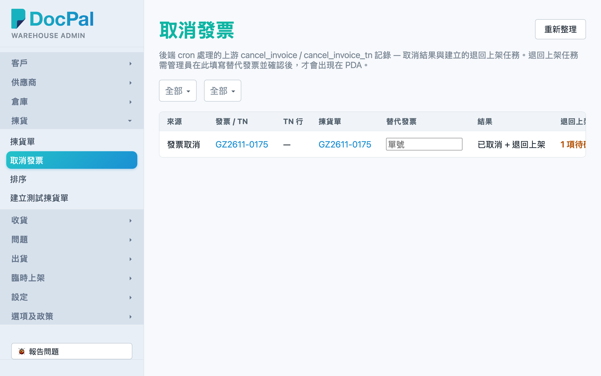
取消发票页面整体版面（标题、说明文字、筛选栏、记录列表）
第 2 步：查看有哪些取消记录
列表每一行是一条取消处理记录，栏位包括：
- 来源：「發票取消」（整张发票取消）或「TN 行取消」（只取消发票其中一行）。
- 发票 / TN：被取消的发票编号；如果系统找到对应拣货单，编号是蓝色链接，点击进入会跳转到该张拣货单的详情页。
- TN 行：取消的 TN 行编号（只适用于 TN 行取消）。
- 拣货单：受影响的拣货单号，同样可以点击进入查看详情。
- 结果：处理结果，分别是「已取消」、「已取消 + 退回上架」、「已忽略」或「錯誤」（错误会用红色显示）。
- 退回上架：此张取消产生的退回上架任务数目。
- 讯息：系统处理时的补充说明。
- 处理时间：系统何时处理了这条取消。
注意：「無法匹配」的记录不会在列表出现（系统已经过滤）。如果没有任何记录，列表会显示「沒有取消記錄。」
第 3 步：筛选记录（如有需要）
表格上方有两个筛选栏：
- 「來源」下拉：选择「發票取消」或「TN 行取消」；默认「全部」。
- 「結果」下拉：选择「已取消」、「已取消 + 退回上架」、「已忽略」或「錯誤」；默认「全部」。
一选完筛选，列表会即时重新载入，无需再按按钮。列表亦会自动更新——系统处理新的取消记录时会自动刷新，你也可以随时点击右上角「重新整理」。
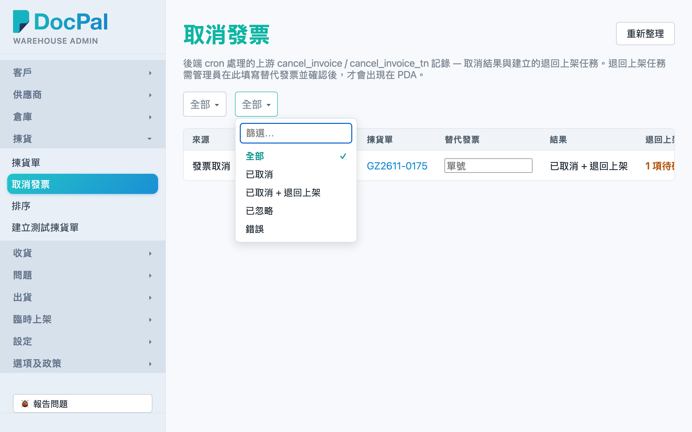
「結果」筛选下拉展开，显示「已取消 / 已取消 + 退回上架 / 已忽略 / 錯誤」四个选项
第 4 步：填写替代发票编号
针对结果为「已取消 + 退回上架」的记录：
- 在该行的「替代發票」栏，点击进入输入框（提示文字是「單號」）。
- 输入新开的更正发票／拣货单号。输入时系统会即时搜索现有拣货单，弹出建议列表（显示单号、状态、行数和总数量）；见到合适的可以直接点选。
- 如果新单还未同步到系统，搜索不到也可以直接照打单号，一样会接受。
- 点击离开输入框（或选了建议）之后，系统会自动保存，无需点击「儲存」按钮。
- 保存成功后，如果系统找到该单，输入框右边会出现一个「↗」链接，点击进入可以跳转到替代发票对应的拣货单详情页核对。
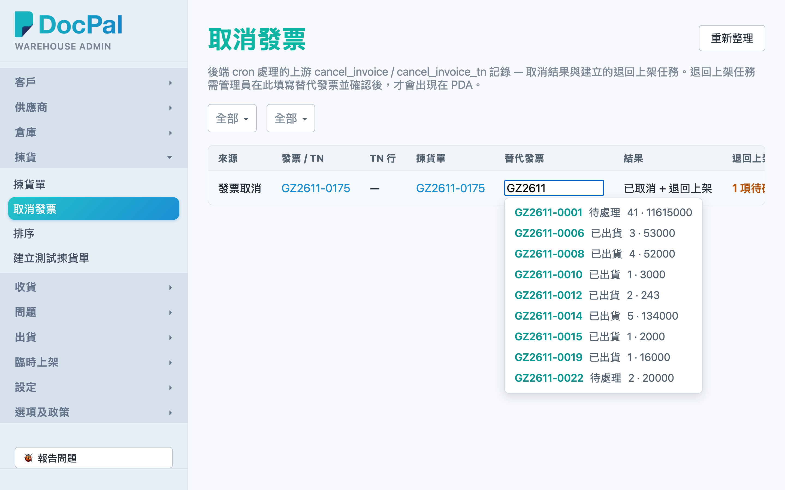
「替代發票」栏输入中，弹出拣货单建议列表
第 5 步：确认退回上架
- 同一行的「退回上架」栏，如果有待确认的任务，会看到橙色字「N 項待確認」加一个「確認退回上架」按钮。
- 核实替代发票已经填妥、无误之后，点击「確認退回上架」。
- 点击完之后列表会重新载入：「N 項待確認」会消失，退回上架栏只显示任务数目。由这刻开始，仓员在 PDA 的退回上架清单就会看到这些任务。
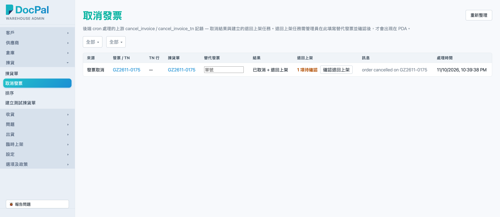
退回上架栏显示「N 項待確認」和「確認退回上架」按钮的行
第 6 步：跟进错误记录（如有）
如果某行「結果」显示红色「錯誤」：
- 查看该行的「訊息」栏，了解系统报告的问题（例如找不到对应拣货单）。
- 与上游开单的同事核实取消数据是否正确；修正后系统再处理时，本页会自动更新。
- 处理期间按钮和输入框会暂时变灰（停用），等它完成再继续操作。
常见问题
Q：为什么找不到某张被取消的发票？
A：先用「來源」和「結果」筛选查看是否被过滤了（默认是「全部」）。另外，系统处理结果为「無法匹配」的记录不会在本页显示；如果确认上游已取消但这里完全没有记录，可能数据还未同步到，等一等再点击「重新整理」。
Q：「確認退回上架」按钮不见了／点不了？
A：按钮只会在有「N 項待確認」的行才出现；已经确认过的行只会显示任务数字。点击完之后按钮会暂时变灰，等列表刷新完就会消失。
Q：替代发票打了单号但搜索不到建议，是不是打错？
A：不一定。新开的替代发票可能还未同步到仓库系统，搜索建议只找现有拣货单；直接照打单号一样会保存，系统不会当它是错。
Q：填错了替代发票怎么办？
A：只要再点击进入「替代發票」栏，改成正确的单号，点击离开就会自动保存新值（清除全部内容就等于删除替代发票记录）。如果已经点击了「確認退回上架」，退回任务已放行到 PDA，要通知主管在 PDA 或系统那边跟进。
Q：「結果」显示红色「錯誤」要怎么做？
A：查看「訊息」栏的原因，多数是取消数据与现有拣货单对不上。与上游核实数据后等系统重新处理；本页会自动刷新显示最新结果，无需你手动删除任何东西。
Q：为什么一定要在这里确认，PDA 才看到退回上架任务？
A：因为取消发票之后，办公室通常会重新开一张更正发票。系统等你在本页登记替代发票并确认，才放行退回上架任务，避免仓员在未搞清楚哪张单取代哪张单之前就将货放回架。
第 6 章 问题与警示（Issues & Warnings）
用途
本章介绍左侧菜单「问题」分组下的四个页面：收货问题（收货差异）、拣货问题（拣货单问题）、过期日期码警告和问题回报。仓员在 PDA 收货时标记了差异、拣货时上报了问题，或者扫描时遇到过期日期码货品，全部都会在这里等待你跟进。「问题回报」是 PDA 与 admin 使用者通过「报告问题」功能发送的 bug 报告收件箱。这些页面主要供办公室文员／仓库主管处理 PDA 上报的异常，不处理的话相关单据会一直停滞。
开始之前
- 你需要有 admin 群组的账号，才能用桌面浏览器登录 admin 控制台。
- 这些页面全部是「被动」页面——数据来自 PDA 操作员的上报，没有上报就没有记录，无需人工创建。
- 拣货问题的「解决」会将单据放回待处理并重新分配库存，所以点击之前一定要先修正根本原因（例如补回货、改包装规格）。
- 过期日期码警告的处理是整张单一次性处理：同一张单有多少个未处理警告，点击一次「处理订单」就全部处理完毕。
- 导航菜单上「过期日期码警告」和「问题回报」右边会有一个圆形数字徽章（分别是橙色和红色），显示还有多少个待处理项目，超过 99 会显示「99+」。
逐步操作
第 1 步：进入「问题」分组
- 登录 admin 控制台之后，在左侧导航菜单点击「问题」分组（如果已收起，点击分组标题展开）。
- 会看到四个链接：收货问题、拣货问题、过期日期码警告、问题回报。留意「过期日期码警告」和「问题回报」右边的数字徽章。
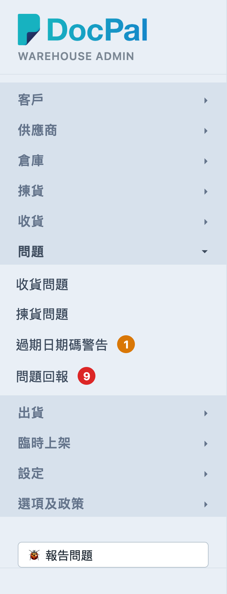
左侧导航菜单「问题」分组展开，可见四个链接和「过期日期码警告」／「问题回报」的数字徽章
第 2 步：处理收货差异（收货问题）
- 点击「收货问题」，页面标题是「收货差异」。列表每一行是一个 PDA 收货时标记的差异项目，字段包括：批次号、发票号、零件编号、供应商、原因、数量、错误零件编号、备注。
- 点击任意一行可以跳转到那张收货单的详情页，核对实际情况后再返回处理。
- 每行右边有两个按钮：
- 「确认」：表示已知悉这个差异。差异标记会保留在系统作为审计记录，此行会从列表消失。
- 「取消」：清除这个差异标记（例如属于误报），此行会从列表消失。
- 点击按钮之后按钮会显示「儲存中…」，完成后列表自动更新。如果什么差异都没有，列表会显示「暫無未處理的收貨差異。」右上角「重新整理」可以随时手动刷新。
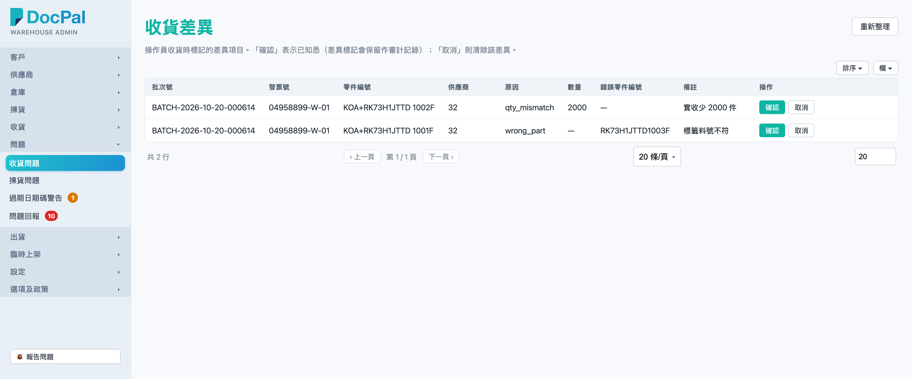
收货差异列表，可见字段和每行的「确认」／「取消」按钮
第 3 步：处理拣货单问题（拣货问题）
- 点击「拣货问题」，页面标题是「拣货单问题」。这里列出的是因操作员上报问题而被冻结的拣货单，字段包括：单号、客户、原因、数量、包装规格、备注、上报时间。
- 点击一行会跳转到那张拣货单的详情页，看清楚原因（例如缺货、包装规格不对）。
- 先去修正根本原因——例如补货上架、通知订单同事改单。
- 返回本页，点击那行右边的「解決」按钮。浏览器会弹出一个输入框「解決備註（可選）：」，可以填写处理说明，留空也可以；点击确定继续，点击「取消」则不会执行任何操作。
- 解决之后那张单会放回待处理状态，并自动重新执行分配，PDA 仓员可以再次看到它。如果什么问题单都没有，列表会显示「暫無有未解決問題的揀貨單。」
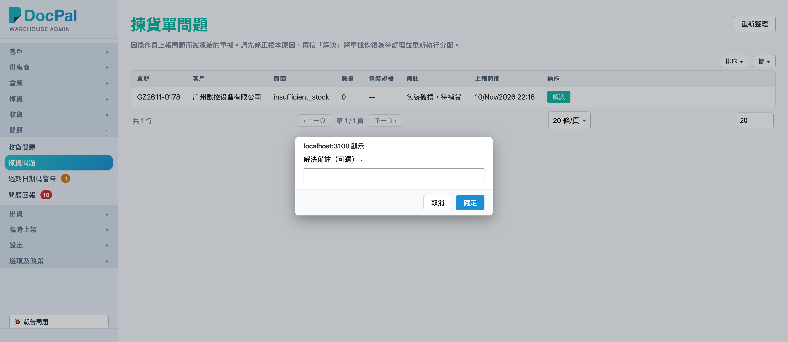
拣货单问题列表，弹出「解决备注（可选）：」输入框
第 4 步：处理过期日期码警告
- 点击「过期日期码警告」。这里列出 PDA 拣货／上架扫描时发现超出供应商期限的日期码货品，字段包括：流程（拣货／上架）、订单（蓝色链接，点击进入单据详情页）、零件、供应商、日期码、期限（月）、数量、扫描者、扫描时间、状态和处理结果。
- 页顶有三个筛选栏：「状态」（默认「待处理」，可选「已处理」或「全部状态」）、「流程」（默认「全部流程」）、「供应商」（默认「全部供应商」，可以多选）。选择完毕列表即时更新。
- 对着待处理的行，点击右边的「處理訂單」按钮，会弹出对话框「處理過期警告 — （單號）」，里面写明「此操作會處理此訂單全部 N 個未處理警告；被擱置的訂單將會完成。」
- 在「備註」栏填写处理说明（例如「已聯絡供應商確認可照常出貨」，提示文字「處理備註（可留空）…」），然后点击「處理」。不想处理就点击「取消」或右上角「×」。
- 完成后页顶会出现绿色提示「已處理 （單號） 的 N 個警告。」，那些行的状态会变为「已處理」，「处理结果」栏会显示处理人、时间和你填写的备注。导航徽章的数字会即时减少。
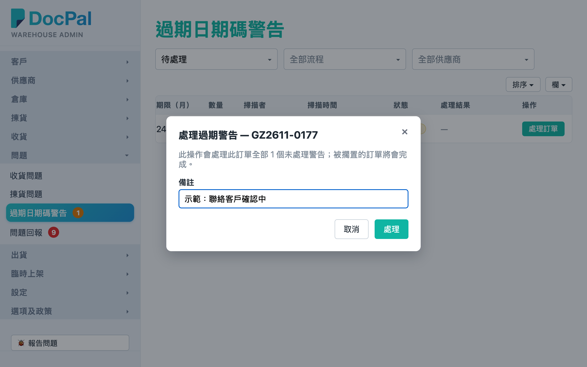
过期日期码警告页，弹出「处理过期警告 —（单号）」对话框，正在填写备注
第 5 步：查看问题回报（bug 收件箱）
- 点击「问题回报」。这里是 PDA 和 admin 使用者通过「报告问题」功能（PDA 页顶／admin 左下角的 🐞 按钮）发送的报告，字段包括：报告时间、报告人、界面（哪个 app 哪一页）、类别、状态。
- 顶部两个筛选栏：「状态」（待处理／已分类／已关闭／全部状态）和「类别」（全部类别，例如扫码失败、日期码错误等）。
- 点击那行右边的「詳情」按钮，会弹出完整报告：描述、环境资料、操作纪录（使用者提交前的操作轨迹）、照片（如有）。
- 对话框底部可以更新：
- 「狀態」下拉：待处理 → 已分类 → 已关闭（跟进流程）。
- 「UAT 編號」栏：如果这个问题已经登记为 UAT bug，填入编号（提示「例如 BUG-040」）。
- 点击「儲存」完成，页顶会显示「已儲存」；误传的报告可以点击「刪除」移除。关闭对话框之后，导航的红色徽章数字会更新。
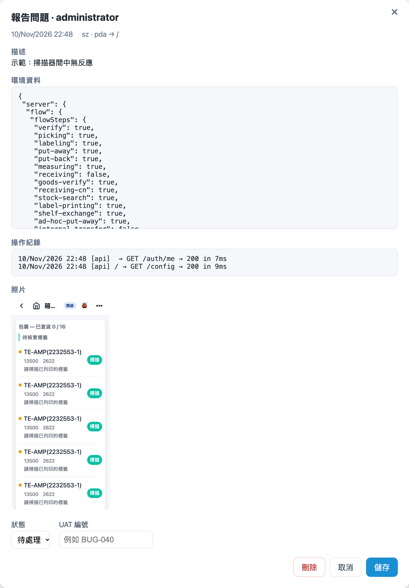
问题回报详情对话框，可见描述、环境资料、操作纪录、照片和底部状态／UAT 编号栏
常见问题
Q：为什么「收货问题」／「拣货问题」没有任何记录？
A：没有记录即没有操作员上报异常，是好事。收货差异一经「确认」或「取消」都会从列表消失，所以处理过的不会再看到。
Q：拣货问题点击了「解决」，但那张单之后又弹回来？
A：「解决」只是将那张单放回待处理；如果根本原因（例如仍然缺货）未修正，操作员很快会再次上报。点击「解决」前一定要先去拣货单详情页看清楚「原因」并修正好问题。
Q：过期警告想逐个处理可不可以？
A：不可以，处理是整张单一次性的——点击「处理订单」会处理那张单全部未处理警告。对话框里面会预先告诉你有多少个（「此操作會處理此訂單全部 N 個未處理警告」），数量不对就先不要点击。
Q：处理过期警告时不填备注可不可以？
A：备注可以留空，但建议一定填写——「处理结果」栏会长期显示这段文字，日后追溯才知道当时怎样处理。
Q：「问题回报」的红色徽章数字不变？
A：徽章是进入页面时以及离开「问题回报」页时才刷新。刚刚处理完报告，离开该页之后数字才会更新；无需理会它，不影响实际报告。
Q：删除了的问题报告可不可以找回？
A：不可以，「删除」是即时移除，无法还原。不确定的话，宁愿将状态改为「已关闭」。
第 7 章 仓库设置（Warehouse Setup）
用途
本章涵盖 Admin 控制台中的五个仓库基础设置页：货架、货架箱、子库、箱型、国家。它们负责维护仓库的物理与逻辑结构：货架位置及其 QR 标签、货架箱（批量建立与打印箱标签）、子库与共享组、箱型尺寸选项，以及国家列表。这些设置直接影响 PDA 流程——例如上架时 PDA 扫描的货架 QR、上架建议的货架归属、拣货时跨子库共享的范围，以及收货时选择的原产地。一般由仓库主管在开仓、新增货架或调整仓库布局时使用，日常无需频繁修改。
开始之前
- 使用具有 admin 群组权限的账号，在桌面浏览器登录 Admin 控制台。
- 货架与货架箱的 QR 标签必须先打印并贴上实体货架，PDA 才能扫描——建议设置完成后立即打印。
- 「子庫存（可多選）」选择的子库，会影响 PDA 上架建议将货架归属到哪个子库；共享组会影响拣货分配时能否跨子库取货。
- 箱型与国家属于选项数据，PDA／收货流程的下拉选项会用到，增删前请确认现有单据不受影响。
- 打印货架／箱标签前，请确认打印机已在打印服务中设置好（打印对话框内可选择打印机与标签尺寸）。
逐步操作
第 1 步：进入货架页
从左侧菜单点击「貨架」。页面显示全部货架的表格，列包括「代碼」、「顯示名稱」、「區域」、「警告」、「子庫存（可多選）」、「建立時間」、「更新時間」。上方有搜索框（搜索货架）和「區域」筛选下拉。
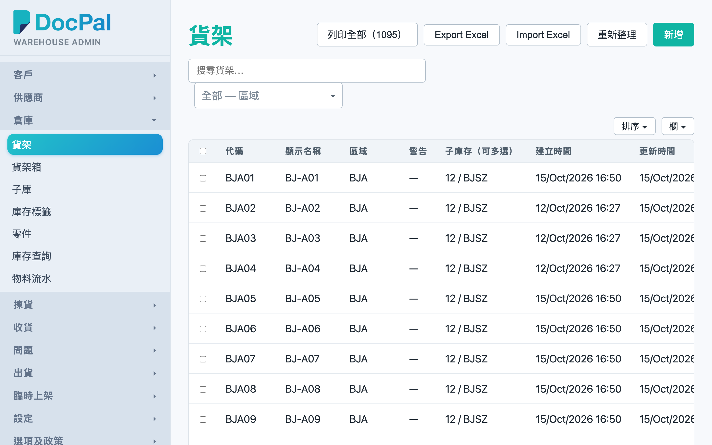
货架列表页，显示表格、搜索框和区域筛选
第 2 步：新增一个货架
点击右上角「新增」按钮，弹出「新增貨架」对话框。填写：
- 代码（必填）：货架的唯一代码，QR 标签编码的就是这个代码，建立后不可修改。
- 显示名称：标签上印的名称，例如「A-01-03」。
- 区域：货架所属区域，用于筛选。
- 警告：提示文字；凡分配指向此货架就会显示 ⚠ 图标，留空即无警告。
- 子库（可多选）：勾选此货架属于哪些子库（用于上架建议归属）；全部不勾选代表共用货架，所有子库都可以获得建议。
点击「建立」完成。
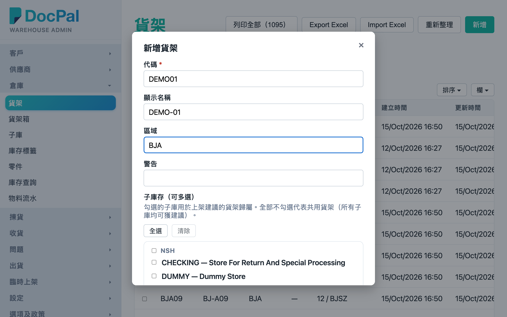
新增货架对话框，已填写示例数据
第 3 步：编辑／删除货架
在该行右侧「操作」列点击「編輯」，可修改「顯示名稱」、「區域」、「警告」或子库存（「代碼」不可修改），点击「儲存」。点击「刪除」会先弹出确认「刪除 {代碼}？」。注意：删除有库存或任务指向的货架前，请先确认没有未完成的上架／拣货工作。
第 4 步：打印货架 QR 标签
- 单张：在该行点击「列印」，弹出「列印標籤」对话框，选择打印机、标签尺寸（小 53×16mm／中 68×35mm／大 104×35mm／特大 104×40mm／A4 标签纸 24 格）、份数，点击「列印」。也可以点击「下載為 PDF」。
- 批量：用每行左侧的复选框勾选多个货架，点击表格上方「列印所選（N）」；或者点击「列印全部（N）」。批量会按所选尺寸排版成 A4 页面逐页打印。
- 下载图档：点击该行「下載標籤」，直接下载一张 PNG（上方 QR、下方货架名和区域），不经打印服务，适合交给印刷厂。
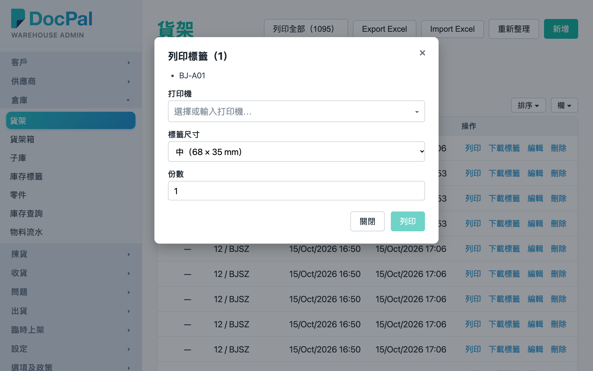
打印标签对话框，显示打印机、尺寸、份数选项
第 5 步：批量编辑与 Excel 导入导出
- 勾选多个货架后点击「批量編輯（N）」，可以一次性更新全部所选货架的子库存，另外可勾选「同時更新警告」和「同時更新區域」。全部子库不勾选代表改为共用货架。
- 点击「Export Excel」下载全部货架（Code / Name / Group / Warning / Sub-Inventory 五列）。修改完成后点击「Import Excel」选择该文件：以 Code 对照，已存在的货架会更新、新代码会建立；空白格不会改动原有数据。导入完成会显示建立／更新／略过数量。
第 6 步：管理货架箱
从左侧菜单点击「貨架箱」。表格显示「ID」、「貨架」、「Org ID」、「子庫」、「狀態」（open／closed／verified）、「明細數」、「總數量」、「建立時間」。
- 批量建立：点击「新增」，在「新增貨架箱」对话框填写「貨架代碼」（可留空，之后再绑定）、「Org ID」（例如 2）、「子庫」（例如 STORE1）、「狀態」和「數量」——数量填多少就一次建立多少个相同设置的箱，系统会自动编配箱 ID。勾选「建立並列印標籤」可以建立完成后立即弹出打印对话框。点击「建立」。
- 打印／下载：每行「操作」列有「列印」、「下載標籤」；也可以用复选框勾选后点击「列印所選（N）」，或者「列印全部（N）」。
- 详情：点击 ID 链接进入「貨架箱」详情页，查看箱的完整数据和其中的明细（零件编号、数量、已核对、核对时间）。点击「← 返回貨架箱列表」返回列表。
- 编辑／删除：「編輯」可修改货架、Org ID、子库、状态（货架留空即清除货架分配）；「刪除」需要确认「刪除箱 {ID}？」。
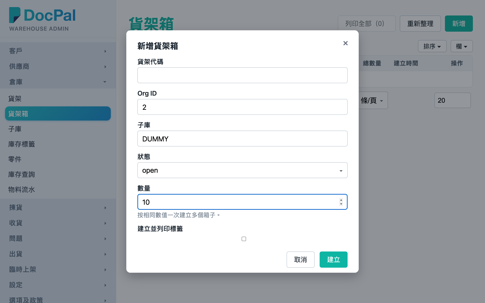
新增货架箱对话框，数量填 10 并勾选建立并列印标签
第 7 步：管理子库与共享组
从左侧菜单点击「子庫」。页面上方有一句说明：库存按 Org ID + 子库划分，同一共享组内的子库可以互相满足彼此的拣货需求。
- 新增子库：点击「新增」，「Org ID」和「子庫」（代码）必填；「描述」、「辦公室代碼」、「組織 ID」、「客戶代碼」选填（客户代码只有客户专用仓才需要设置）。点击「建立」。
- 筛选与编辑：用搜索框按 Org／代码／名称／客户／共享组筛选；每行可「編輯」（修改描述、办公室代码、组织 ID、客户代码）或「刪除」。
- 共享组：每行「共享組」列的下拉可以直接指派或清除该子库的组别。要批量管理，点击页面上方「共享組」按钮，弹出「管理共享組」对话框：左侧输入新群组名称点击「建立」开新组，右侧勾选属于这个组的子库（已属其他组的子库会标示「屬於 X」，勾选即将其移过来），点击「儲存」。注意：群组至少要有一个成员才会被保存；移除最后一个成员即删除该组。
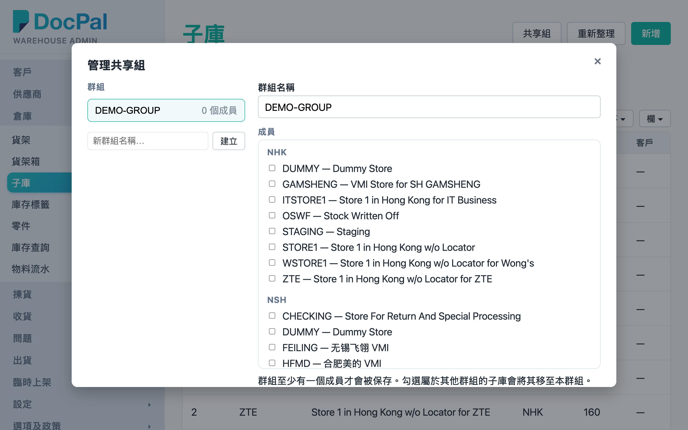
管理共享组对话框，左侧群组列表、右侧成员勾选
第 8 步：管理箱型与国家
- 箱型：左侧菜单点击「箱型」，点击「新增」建立，填写「代碼」（必填，建立后不可修改）和「描述」。每行可「編輯」／「刪除」。这里的代码会出现在出货箱流程的箱型选项中。
- 国家：左侧菜单点击「國家」，同样用「新增」建立，填写「代碼」（必填）、「名稱」（必填）、「短代碼」。每行可「編輯」／「刪除」。收货时填写原产地／原产国会用到这个列表。
常见问题
Q：点击「新增」后点击「建立」无反应／弹出错误？
A：先检查必填栏（红色 * 或者提示「XX為必填項」）。Org ID 必须是整数（例如 2），不可填写字母。子库代码在同一个 Org ID 下不可重复。
Q：打印标签点击了「列印」但打印机没有出纸？
A：先在对话框确认选择了正确的打印机；确认打印服务与打印机在线。可以改用「下載為 PDF」（货架）或「下載標籤」（PNG）下载到本机，再用普通打印机打印。
Q：货架箱建立到一半失败（例如提示「已建立 N 個箱子後失敗」）？
A：前面成功的箱已经建立了，不会重复。点击「重新整理」查看已建立的箱，差多少就补建多少。
Q：删除货架／子库／箱型后发现做错了，怎么补救？
A：系统没有复原功能，只能重新「新增」建立回来。所以删除前一定要确认没有库存、任务或单据仍指向它；货架可以先善用「Export Excel」留底，出事时用「Import Excel」一次性还原。
Q：为什么有些货架的分配会看到 ⚠ 警告图标？
A：因为那个货架设置了「警告」文字。想消除就编辑该货架，将「警告」栏清空再储存。
Q：修改了共享组，拣货分配何时才生效？
A：共享组只影响之后重新计算的分配。如果现有拣货单已分配了，要在拣货单页点击「重新分配」才会按新共享组重新取货。
第 8 章 库存查询（Stock Search）
用途
「庫存查詢」是仓务主管与办公室文员用来查询仓库实时库存的页面：某个料还有多少、放在哪个货架、哪些批次已被拣货单分配、哪些批次太旧（过期）。除了查数量，还可以打开每个批次的「批次歷史」，追溯该批货从收货到出货的所有出入记录，查数、对单、处理客户查询都依赖它。本页面为只读 — 不会修改任何库存数据。
本章最后还会简介两个相关的只读查询页：「臨時上架」（查 PDA 临时上架的记录）与「內部調撥單」（查子库之间的调拨单进度）。
开始之前
- 你需要有 admin 群组的账号，才能登录 Admin 控制台。
- 库存数据来自日常操作：收货、上架、拣货、出货全部经 PDA 完成后，此页才会有数据。如果仓库刚开通、尚未进行任何操作，搜索结果会是空的。
- 你只会看到你账号所属子库范围内的库存；看不到某个位置的货，可能是权限设置问题，请联系系统管理员。
- 页面顶部的概要卡（物料项目、现有数量等）一进入页面就会显示全仓总数，无需按搜索。
逐步操作
第 1 步：进入「庫存查詢」页
登录 Admin 控制台后，在左侧导航 menu 点击「庫存查詢」。页面顶部是一排概要卡，显示全仓总览：「物料項目」、「現有數量」、「已分配」、「可用」、「過期物料（超過 N 年）」、「批次」、「使用中貨架」、「最近庫存更新」。
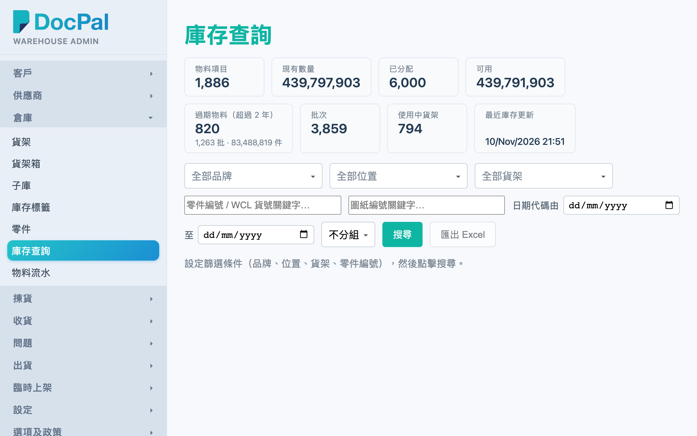
库存查询页面整体：左边 menu 高亮「庫存查詢」，顶部概要卡显示全仓总数
第 2 步：设置筛选条件
概要卡下面是筛选栏，可以任意组合，留空即为「全部」：
- 「全部品牌」下拉框：选择一个或多个品牌（可以输入关键字搜索选项）。
- 「全部位置」下拉框：按 Org／子库选择位置，可多选。
- 「全部貨架」下拉框：选择指定货架，可多选。
- 「零件編號 / WCL 貨號關鍵字…」输入框：输入料号的一部分即可。
- 「圖紙編號關鍵字…」输入框：按图纸编号搜索。
- 「日期代碼由」／「至」：选择日期范围，旁边会显示对应的日期码（例如 2532）；点击「清除」可以移除该条件。
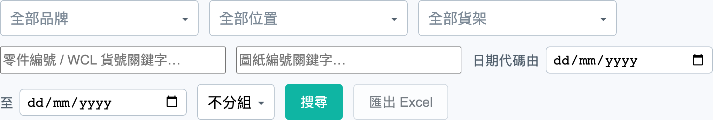
筛选栏特写：品牌／位置／货架下拉框、料号和图纸编号输入框、日期代码范围
第 3 步：按「搜尋」查看结果
点击蓝色的「搜尋」按钮（在料号输入框按 Enter 同样有效）。下方的「批次」表会列出符合条件的库存批次，字段包括：零件编号、描述、品牌、Date Code、批次号、图纸编号、COO、COW、货架、区域、箱、Org / 子库、总数、已分配、可用。
- 「總數」是批次的实际数量；「已分配」是已被拣货单预留的数量；「可用」才是还可以自由运用的数量。
- 点击字段标题可以排序；表格底部分页可以翻页及调整每页行数。
- 顶部概要卡会跟随筛选条件更新，变为「目前筛选范围」的总数。
- 如果其他同事刚完成上架或重新分配，画面会弹出更新提示，点击提示中的刷新按钮即会重新搜索。
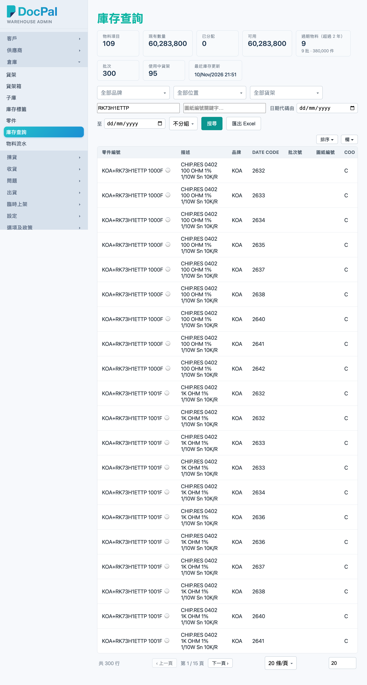
搜索后的批次表：多行结果、字段齐全、底部有分页、「匯出 Excel」按钮已亮起
第 4 步（可选）：用「分組」整理结果
「分組」下拉框可以将结果「按品牌」、「按货架」或「按区域」分组显示；选回「不分組」即还原。分组模式下每组一个表，组标题显示组名与批数（例如「A0101 — 3 批」）。分组选择会被记住，下次进入无需再选。注意：分组模式会一次性加载所有符合条件的批次，数量多时会稍慢。
第 5 步（可选）：导出 Excel
搜索完成后「匯出 Excel」按钮会亮起，点击它会下载一个 stock-search-日期时间.xlsx 文件，包含所有符合当前筛选条件的批次（不限于当前页），字段与画面一致，Date Code 会以标签上的格式显示，方便直接交给客户或同事。未按过「搜尋」之前此按钮为灰色。
第 6 步：查批次历史（异动记录）
在批次表的「零件編號」一列，每行料号旁边有个 🕒 时钟图标，点击它打开「批次歷史」窗口：
- 顶部显示批次基本资料：料号、Date Code、批次号、COO/COW、位置（货架或「(暫存區)」）、数量与已分配数。
- 「來源（收貨）」表：该批货由哪张收货单（批次号）收入、数量、时间。
- 「出入記錄」表：该批货每一笔异动流水 — 时间、操作者（无记名即「系統」）、类型（收货（暂存）、上架、预留、拣货、调整、出货等）、数量（绿色 + 为入、红色 − 为出）、货架/箱、去向（拣货单号 → 出货箱号）、原因。
看完点击右上角「×」或「取消」关闭。
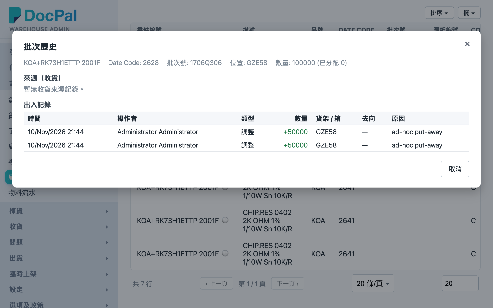
批次历史弹窗：显示来源（收货）表和出入记录表（有正负数量）
第 7 步：顺便查看「臨時上架」与「內部調撥單」
两者都是只读查询页，由左侧 menu 进入：
- 临时上架：列出 PDA「臨時上架」功能做过的每批上架记录。可以用「全部供應商」、「全部貨架」下拉框和「從」／「至」日期筛选，再点击「重新整理」。表内显示 ID、供应商、货架、Org、子库、明细数、总数量、操作人、建立时间；点击 ID 进入详情页查看每件物料的零件号、WCL 物料号、数量、日期码、批次号、产地、序号。
- 内部调拨单：显示上游系统同步下来的内部调拨单（子库之间的库存移动），调拨执行流程上线前此页为只读。用「全部狀態」下拉框（待处理／已分配／拣货中／异常／已完成）或「單號 / 客戶…」搜索框筛选。表内显示单号（点击进入查看行项目详情）、移出／移入位置、状态、分配状态、行数 / 数量、已拣 / 已分配、客户、建立时间。
常见问题
Q：明明仓库里有货，为什么搜索显示「暫無庫存批次」？
A：最常见是筛选条件太严 — 检查品牌／位置／货架下拉框是否已选了选项，或者日期代码范围太窄（点击「清除」移除）。其次，PDA 已收货但未上架的货会在暂存区，「貨架」栏为空；试试留空所有条件直接搜索全仓。仍然找不到，可能是你账号的子库范围不包括该位置，请联系系统管理员确认。
Q：「匯出 Excel」按钮是灰色点不了？
A：要先至少按过一次「搜尋」才会亮起。另外如果搜索结果是零批，导出不会产生文件。
Q：「可用」数量与「總數」不同，为什么？
A：差额就是「已分配」— 已被拣货单预留的数量。想查看哪张单预留了，点击该行的 🕒 图标查看批次历史的「出入記錄」，「預留」类型的去向栏会显示拣货单号。
Q：「過期物料（超過 N 年）」是怎么算的？
A：按批次的 Date Code 计算，日期码早于设定年数（由系统管理员在流程设置中调整）即算过期，概要卡会列出过期物料数，下面注明是多少批、多少件。用「日期代碼由／至」筛选可以列出过期批次明细。
Q：为什么画面突然弹出提示说数据已更新？
A：有其他同事完成了上架或重新计算了拣货分配，系统会即时通知。点击提示上的刷新按钮重新搜索，就会看到最新数据。
Q：批次历史的「操作者」显示「系統」，即是谁做的？
A：该笔异动是系统自动产生（例如同步或自动分配），并非人工操作，所以没有操作员名。想继续追查可以查看「去向」与「原因」栏的单号线索。